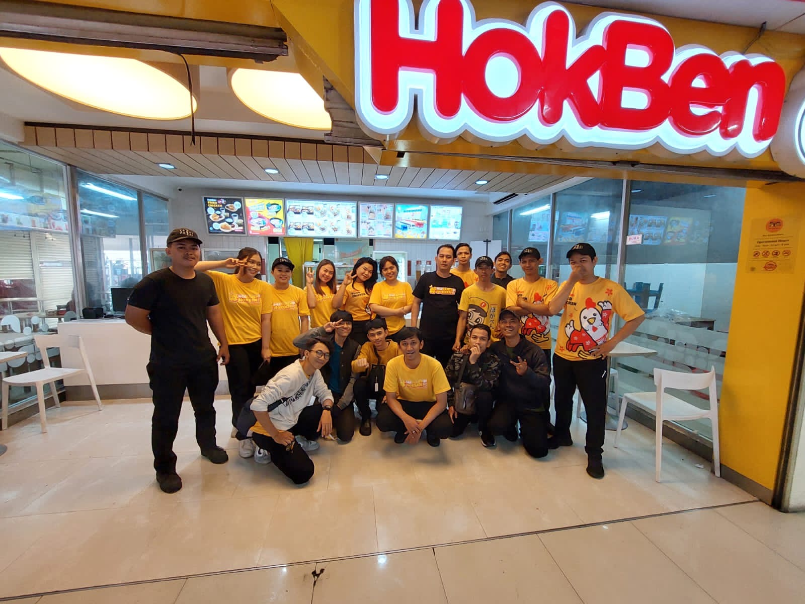
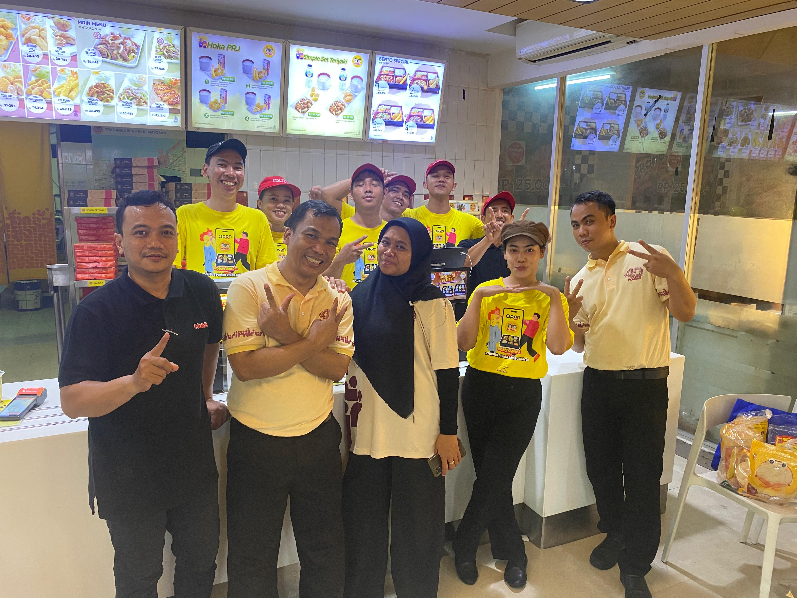
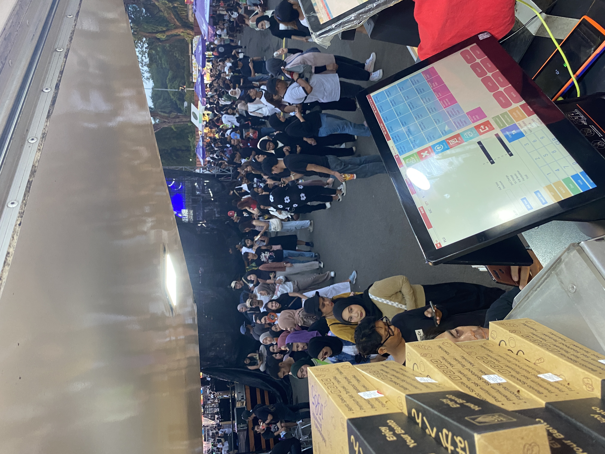

Jakarta Fair 2024
- Meng-handle transaksi dan pelayanan pelanggan selama event berlangsung.
- Menjaga kecepatan layanan dan ketelitian saat peak hour.
±500 customer / hari
Retail • F&B Specialist
Retail & F&B Service Specialist
Profesional berpengalaman di F&B dan retail dengan kemampuan pelayanan pelanggan, penjualan, serta pengelolaan stok dan operasional sesuai SOP. Disiplin, komunikatif, dan mampu bekerja dalam tim maupun di bawah tekanan. Siap berkembang di industri Retail dan F&B.
Saya memiliki passion yang besar di bidang Retail dan F&B karena saya sangat menikmati dinamika berinteraksi dengan banyak orang setiap harinya. Sebagai pribadi yang disiplin dan komunikatif, saya percaya bahwa pelayanan yang ramah bukan hanya soal transaksi, tetapi tentang membangun kepercayaan pelanggan. Saya terbiasa bekerja dalam tim dan tetap tenang dalam memberikan solusi terbaik, bahkan di bawah tekanan jam sibuk sekalipun.
Pengalaman event saat bekerja di HokBen, termasuk event berskala nasional maupun internasional.



